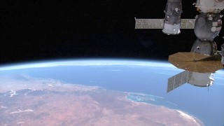

|
 previous / next column previous / next column
A PHYSICIST WRITES . . .
(January 2016)
We live in exciting but mysterious times! A recent excitement, for anyone with (a) an interest in outer space and (b) some pride in this nation, was the elevation in December of the British astronaut Major Tim Peake to the International Space Station (ISS). OK, you might say that its orbit lies in 'inner' rather than 'outer' space, but even so he soon started doing valuable work there, after finding his feet (or should I say losing them?) in zero gravity.
Apparently he took only 24 hours or so to adapt to this and start to feel 'normal'. Though almost immediately, and I suppose not surprisingly, in these conditions you begin to lose muscle strength in the limbs. I would think that Major Tim will take much longer to get used to his full weight again, when he lands back on Earth in June.
Strictly speaking, though, gravity isn't zero up there: the pull is nearly 90% of its strength down here. So if an item could be released from a static position at the height of the ISS, it would accelerate towards the Earth at almost the same rate as it would (briefly) if I dropped it from a few feet off the ground. All that's different about the ISS and its contents is that they are orbiting at just the right speed - five miles a second - for them to be falling 'round' the planet instead of towards it. And paradoxically, if you're in free fall of any sort (including inside the ISS) under gravity, what you experience is weightlessness.
The space station is fitted with portholes through which the astronauts can see the dazzling Sun and the Earth, and (especially when the latter is blocking out the former) the blackness of space. I would guess, though, that their view out is rather restricted, compared with... well, here's the mystery that I had in mind at the start: why has almost no publicity been given to a set of cameras that are fixed to the outside of the ISS at the 'front', and which send down stunning live video continuously for anyone to view on the internet?
I only heard about this by chance, on Radio 4. You can watch it at http://eol.jsc.nasa.gov/HDEV, and you will hardly be able to tear yourself away (except when the space station is in the dark). One of the cameras is pointing forward and shows us a continent, or an ocean or (more often) a beautiful sea of cloud-tops, rolling slowly towards us over the curve of the globe. Another camera faces back, past a corner of the huge space station (it's about 110m x 70m x 20m) - as you can see from a screenshot that I captured, below, which shows the whole of the west coast of Australia. A third camera looks down towards the surface of the Earth sliding underneath, though annoyingly (well, it annoys me) the camera has been mounted the wrong way round, putting south at the top.

[Another mystery: sometime near the end of February, the horizontal disc-shaped thing in my photo disappeared from the live video! Assuming that it didn't fall off and float away, I suppose it was either folded up by remote control or else dismantled during a space walk that was less publicized than Tim Peake's.]
The video picture that comes down to your screen usually switches automatically from one camera to another at regular intervals. You can easily click to change it to a full-screen image, and also to maximize the resolution. The Sun rises and sets on a 90 minute cycle - sometimes in view, sometimes just off-screen or (depending on which camera is in use) behind you. Occasionally you can see the Moon too, though I haven't yet succeeded in this. The cameras aren't sensitive enough to show the stars and other planets, unfortunately. When a shuttle rocket is approaching or leaving the ISS, quite possibly it will become visible via one of these cameras.
Below the picture on the HDEV webpage, you will find a world map showing the approximate location of the space station and the path that it's following. Under this is a standard google-map showing precisely which point on the globe the ISS is above (it's a good idea to click on Map instead of Satellite, and zoom out a bit). I've actually made a minor contribution to the page myself: when I first started viewing it, I observed that quite a slice across the top of the world map was missing. I sent an email to the address given, and they replied saying: Thank you, sorry, we hadn't noticed that the positioning on the page had slipped, and it will be put right straight away!
And did you know that the ISS is easy to see for yourself, floating briefly across either the early morning or the evening sky (if it's a clear one), lit up by the Sun from below our horizon? Here's a website that tells you exactly when and where to look: www.heavens-above.com - once you're there, first click Change your Location and then, when you've set that, go back to Predictions and click on ISS.
You will be amazed that you haven't noticed the bright reflected light from the space station before! There are periods of a fortnight or so when it is out of sight of the UK at both the above times, and of course it's not visible in daylight (except perhaps with a telescope, if you're very lucky) or in the middle of the night when sunlight doesn't reach it. But when you do see it, just remind yourself that it is man-made, 250 miles up, and tenanted!
I also have worrying news to report - serious both for the present astronauts (if they don't know it already) and for space exploration in general. NASA medics have observed that after spending several months on the ISS, many spacemen return with eye trouble. Mostly they've become more long-sighted, though some develop cataracts. Whether the cause is the continuous exposure to cosmic rays or the long period of weightlessness (or perhaps both) is not yet known, but clearly the problem will have to be investigated and remedied somehow.
One approach being followed is the development of glasses that will quickly adjust to suit the distance that the wearer is trying to focus at, either by having an extra lens for rapid attachment, or by automatic refocusing. Whichever might be the answer, in due course the benefits are likely to become generally available. That's good news for some of the rest of us, at least, navigating more slowly on the ground!
Peter Soul
previous / next column
|